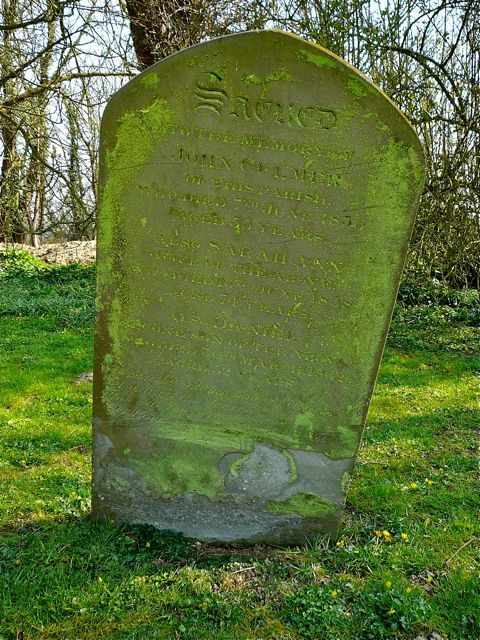
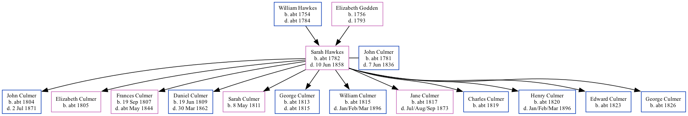

Sarah Anne Culmer (née Hawkes) c1782 - 1858
[ Home ] | [ Calendar ] | [ Surnames Index ] | [ Family History ]The child of William Hawkes and Elizabeth GoddenSarah Hawkes, the 4 times great-grandmother of Nigel Horne, was born in Ash, Kent, England c. 17821,2,3, was baptized there on Jan 20, 1782 and was orphaned at the age of 11 following the death of her father in 1784 and mother in 1793.
She married John Culmer (a parish clerk with whom she had 12 children: John, Elizabeth Davison, Frances, Daniel, Sarah, George, William, Jane, Charles, Henry, Edward and George) there at St Nicholas, on Jan 31, 18019
Throughout her life, she lived in Stourmouth, Kent, England in 18411; and at East Street in Stourmouth on Mar 30, 185110 following the death of her husband on Jun 7, 1836.
She died on Jun 10, 1858 in Stourmouth4,5,6,7,8 and was buried there on Jun 20, 18586,7,8.
Parents
- William was born c. 1754
- Elizabeth was born in 1756
Children
- John was born c. 1804
- Elizabeth Davison was born c. 1805
- Frances was born on Sep 19, 1807
- Daniel was born on Jun 19, 1809
- Sarah was born on May 8, 1811
- George was born c. 1813
- William was born c. 1815
- Jane was born c. 1817
- Charles was born c. 1819
- Henry was born c. 1820
- Edward was born c. 1823
- George was born c. 1826
Citations
- 1841 England Census Online publication - Provo, UT, USA: The Generations Network, Inc., 2006.Original data - Census Returns of England and Wales, 1841. Kew, Surrey, England: The National Archives of the UK (TNA): Public Record Office (PRO), 1841. Data imaged from the National
- 1851 England Census Online publication - Provo, UT, USA: The Generations Network, Inc., 2005.Original data - Census Returns of England and Wales, 1851. Kew, Surrey, England: The National Archives of the UK (TNA): Public Record Office (PRO), 1851. Data imaged from the National
- Kent, England, Tyler Index to Parish Registers, 1538-1874 Online publication - Provo, UT, USA: Ancestry.com Operations, Inc., 2010. This collection was indexed by Ancestry World Archives Project contributors.Original data - Frank Watt Tyler. The Tyler Collection. Canterbury, Kent, England: The Institute of Herald
- England & Wales deaths 1837-2007 - Findmypast
- England & Wales, FreeBMD Death Index: 1837-1915 Online publication - Provo, UT, USA: The Generations Network, Inc., 2006.Original data - General Register Office. England and Wales Civil Registration Indexes. London, England: General Register Office. © Crown copyright. Published by permission of the Cont
- England, Select Deaths and Burials, 1538-1991 Ancestry.com Operations, Inc.
- UK and Ireland, Find A Grave Index, 1300s-Current Ancestry.com Operations, Inc.
- Web: International, Find A Grave Index Ancestry.com Operations, Inc.
- Kent Marriages And Banns - Findmypast
- 1851 England, Wales & Scotland Census - Findmypast (was age 69 and the head of the household)
Media
john and daniel culmer - sally hawkes - gravestone

England & Wales deaths 1837-2007 Transcription - BMD-D-1858-2-AG-000600-009
1851 England, Wales & Scotland Census - GBC/1851/0005917004
Kent, Canterbury Archdeaconry marriages - GBPRS/CANT/M/97180783/2
England Marriages 1538-1973 - R_847751431/2
Family Tree
Generated by ged2site. Last updated on Nov 13, 2024